WorkflowSupervised Model dashboardModel choices availableSetupJupyter notebookRequired python module scripts:Configurationenvironment.yml fileQuick startDashboard overviewMapping of widgets to displayed output and callbacksOverall process flow Main widget events1. Train and evaluate a model Event 1 triggerPerformance-All Selected ModelPredicted samplesFeature Importance tabBar chart of features and impurity-based feature importance scoresSummary plot of SHapley Additive exPlanations (SHAP) valuesTarget vs FeaturesEvent 1 Overall flow Output_widgetsUnderlying Data Frames for content displayData Frames generated from evaluate() method of SupervisedModel classData Frames/matrices generated from functions defined in dashboard_helpers.pyfeature_importanceshap_valuesData Frames generated from multiple modelsSupervisedModel class in focus: train and evaluate2. Load and evaluate a trained model Event 2 triggerEvent 2 Overall flow SupervisedModel class:load and evaluateFuture development Multi-class classification problems Adding new estimators Adding non-probabilistic classifiers Explaining individual predictions Regression problems One hot encoding and subsequent decoding
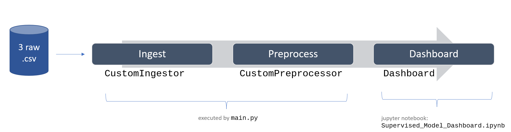
This dashboard displays the following for a Supervised machine learning model:
Binary classification problems:
Regression problems:
Classifiers:
Regressors:
"RFR": RandomForestRegressor (scikit-learn)
"Auto-Regression" (AutoML)
For estimators under the scikit-learn framework, hyperparameters have to be specified by the user in a configuration file prior to training the model.
If the "Auto-Classification" or "Auto-Regression" options are chosen, model tuning and the best estimator that minimises the specified loss will be determined using the FLAML - Fast and Lightweight AutoML package. AutoML settings have to be stated in the configuration file prior to choosing this option. See configuration for further details.
⚠️This Dashboard is an initial release version, which is only valid for:
- binary classification problems with numeric features,
- regression problems with numeric features
Multi-class classification problems, inclusion of more scikit-learn estimators, encoding of non-numeric features (with subsequent decoding), processing of datetime features will be slated for future development.
This Dashboard displays from a Jupyter notebook.
Open the Supervised Model Dashboard notebook by navigating to notebook > Supervised_Model_Dashboard.ipynb
Run all cells to display the dashboard.
xvoila_dashboard.pydashboard_helpers.pysupervised_model_class.py
config.py # Example config file to be imported as a module when training a model
A python configuration file is required when training a model using the Dashboard. The python configuration file would have to be imported as a module at the start of the notebook, or have the following attributes:
TEST_SIZE (float): proportion of dataset to be used as the test set to evaluate model performance
SEED (int): random seed value
SCALER (str, or None): Type of scaler to use to scale features prior to training a model.
'standard', 'robust''minmax'/'min_max' etc)None, no scaling of features will be performed. ONEHOT_COLS (list): list of feature names to be one hot encoded
PARAMS(dict): dictionary of model hyperparameters to use when training a model under the scikit-learn framework
AUTOML_SETTINGS(dict): dictionary of automl configuration settings when "Auto-Classification" or "Auto-Regression" options are chosen. Please refer to FLAML for further details.
The model/estimator type can be selected via the dasboard widget - see Dashboard Overview for more details.
Example:
xxxxxxxxxxTEST_SIZE = 0.2SEED = 2SCALER = NoneONEHOT_COLS = []PARAMS = {'class_weight': 'balanced','max_features': 'sqrt','max_depth': 50,'min_samples_leaf': 2,'random_state': 2}AUTOML_SETTINGS = {"time_budget": 30, # in seconds"metric": 'roc_auc',"task": 'classification',"log_file_name": "../logs/automl.log",}
(for Dashboard class)
xxxxxxxxxxname: sup_dashboardchannels:- conda-forge- defaultsdependencies:- anyio=3.3.2- argcomplete=1.12.3- argon2-cffi=20.1.0- async_generator=1.10- attrs=21.2.0- backcall=0.2.0- backports=1.0- backports.functools_lru_cache=1.6.4- bleach=4.1.0- ca-certificates=2021.5.30- category_encoders=2.2.2- certifi=2021.5.30- cffi=1.14.6- cloudpickle=2.0.0- colorama=0.4.4- cycler=0.10.0- debugpy=1.4.1- decorator=5.1.0- defusedxml=0.7.1- entrypoints=0.3- freetype=2.10.4- idna=3.1- importlib-metadata=4.8.1- importlib_metadata=4.8.1- intel-openmp=2021.3.0- ipykernel=6.4.1- ipython=7.28.0- ipython_genutils=0.2.0- ipywidgets=7.6.5- jbig=2.1- jedi=0.18.0- jinja2=3.0.1- joblib=1.0.1- jpeg=9d- jsonschema=4.0.1- jupyter_client=6.1.12- jupyter_core=4.8.1- jupyter_server=1.7.0- jupyterlab_pygments=0.1.2- jupyterlab_widgets=1.0.2- kiwisolver=1.3.2- lcms2=2.12- lerc=2.2.1- libblas=3.9.0- libcblas=3.9.0- libdeflate=1.7- liblapack=3.9.0- libpng=1.6.37- libsodium=1.0.18- libtiff=4.3.0- libzlib=1.2.11- llvmlite=0.36.0- lz4-c=1.9.3- m2w64-gcc-libgfortran=5.3.0- m2w64-gcc-libs=5.3.0- m2w64-gcc-libs-core=5.3.0- m2w64-gmp=6.1.0- m2w64-libwinpthread-git=5.0.0.4634.697f757- markupsafe=2.0.1- matplotlib-base=3.4.3- matplotlib-inline=0.1.3- mistune=0.8.4- mkl=2020.4- msys2-conda-epoch=20160418- nbclient=0.5.4- nbconvert=6.2.0- nbformat=5.1.3- nest-asyncio=1.5.1- notebook=6.4.4- numba=0.53.1- numpy=1.21.2- olefile=0.46- openjpeg=2.4.0- openssl=1.1.1l- packaging=21.0- pandas=1.3.3- pandoc=2.14.2- pandocfilters=1.5.0- parso=0.8.2- patsy=0.5.2- pickleshare=0.7.5- pillow=8.3.2- pip=21.2.4- prometheus_client=0.11.0- prompt-toolkit=3.0.20- pycparser=2.20- pygments=2.10.0- pyparsing=2.4.7- pyrsistent=0.17.3- python=3.7.10- python-dateutil=2.8.2- python_abi=3.7- pywin32=301- pywinpty=1.1.4- pyzmq=22.3.0- scikit-learn=1.0- scipy=1.7.1- seaborn=0.11.2- seaborn-base=0.11.2- send2trash=1.8.0- setuptools=58.0.4- shap=0.39.0- six=1.16.0- slicer=0.0.7- sniffio=1.2.0- sqlite=3.36.0- statsmodels=0.13.0- tbb=2020.2- terminado=0.12.1- testpath=0.5.0- threadpoolctl=3.0.0- tk=8.6.11- tornado=6.1- tqdm=4.62.3- traitlets=5.1.0- typing_extensions=3.10.0.2- ucrt=10.0.20348.0- vc=14.2- voila=0.2.15- vs2015_runtime=14.29.30037- wcwidth=0.2.5- webencodings=0.5.1- websocket-client=0.57.0- wheel=0.37.0- widgetsnbextension=3.5.1- winpty=0.4.3- xz=5.2.5- zeromq=4.3.4- zipp=3.6.0- zlib=1.2.11- zstd=1.5.0- pip:- catboost==1.0.0- flaml==0.6.5- lightgbm==3.2.1- plotly==5.3.1- python-graphviz==0.17- pytz==2021.3- tenacity==8.0.1- xgboost==1.3.3
Instantiate Dashboard class fromvoila_dashboard.py in an empty jupyter notebook after importing the required python modules and setting up the virtual environment.
Example:
xxxxxxxxxxdashboard = Dashboard(df = df,target = 'TARGET_SERIOUS_ADVERSE',n_samples = 20,cfg = cfg)
Required arguments:
df - cleaned / preprocessed dataset as a pandas Data Frametarget - name of the target variable/column in the dataset
Optional arguments:
n_samples : number of randomly sampled rows to manually inspect predictions with true labels and features in Predicted samples tab (see annotated label 16 below). cfg: python configuration file to input required variables for training and evaluating a model. Not required if the user is loading a trained model for evaluation purposes. See Configuration section for more details.
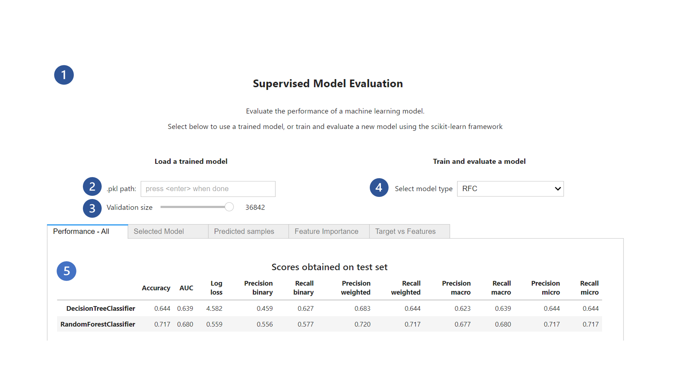
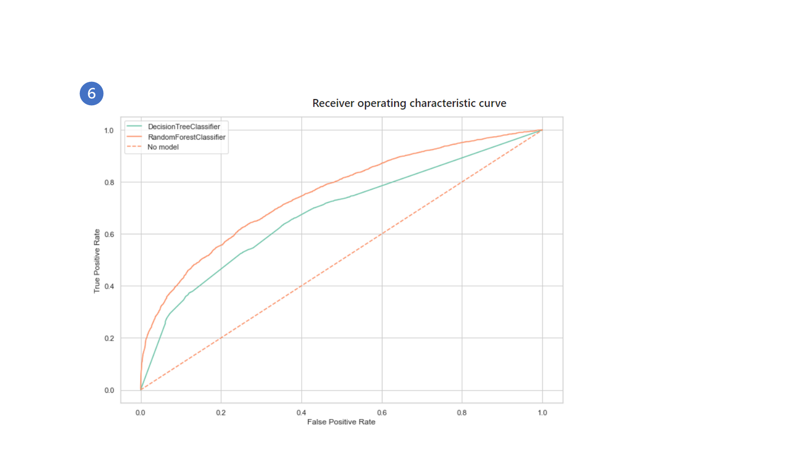
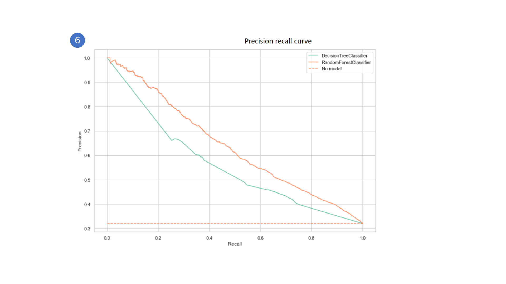
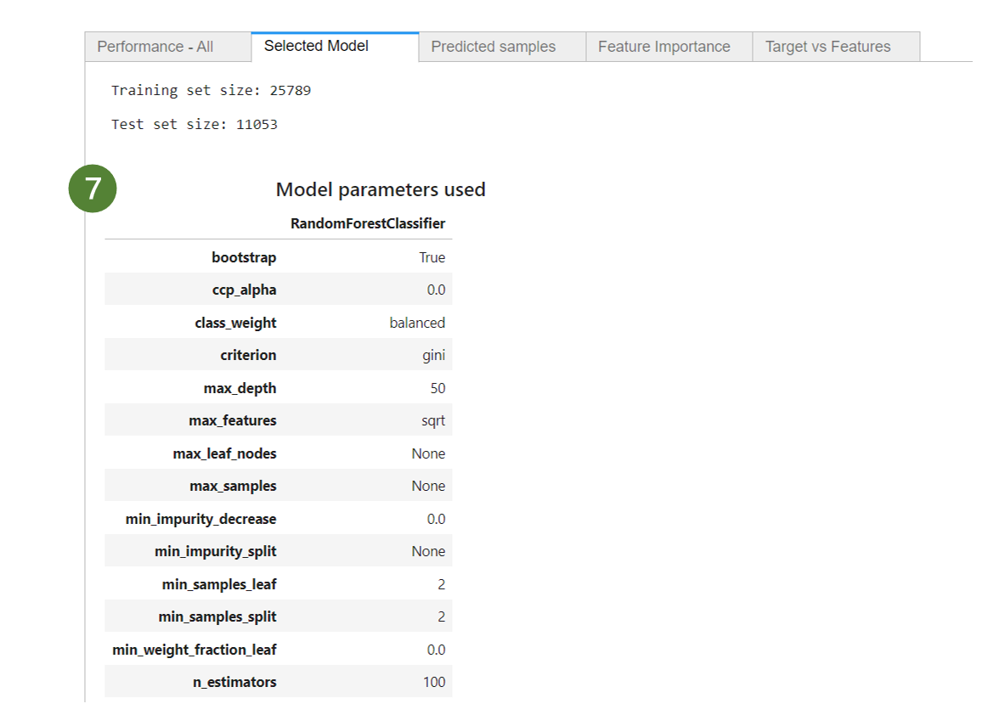
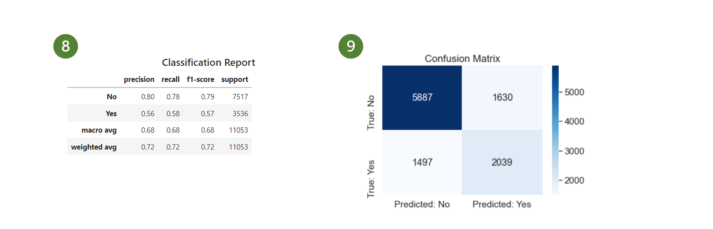
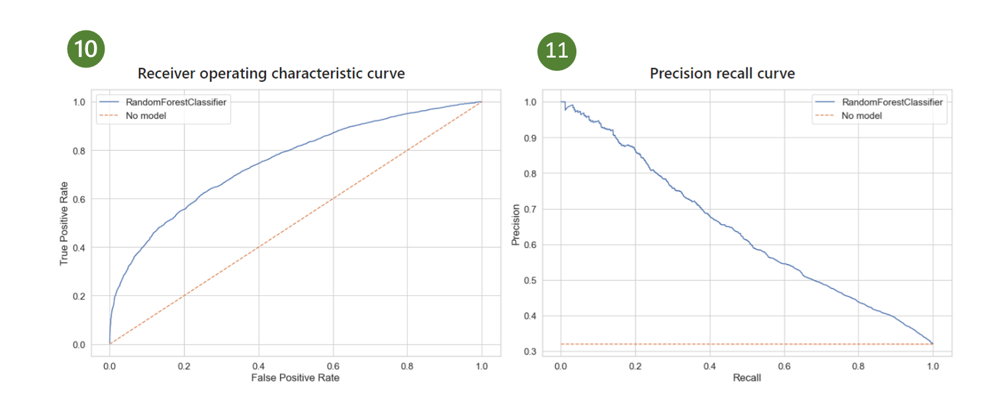
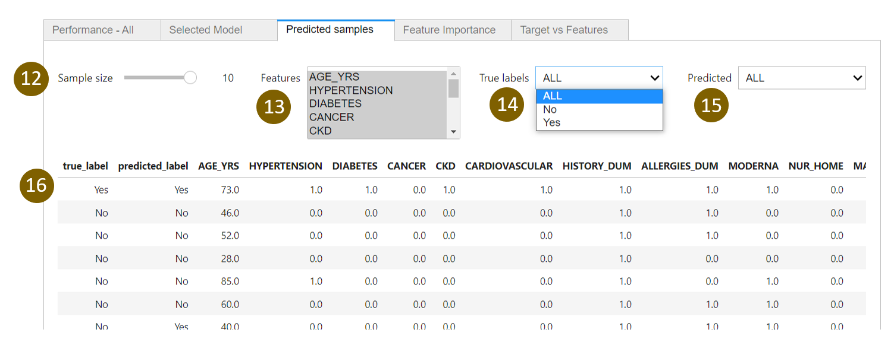
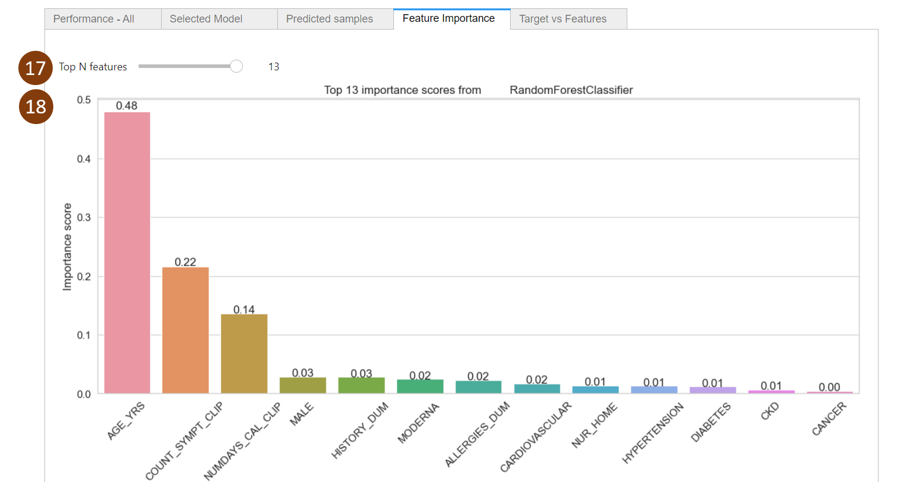
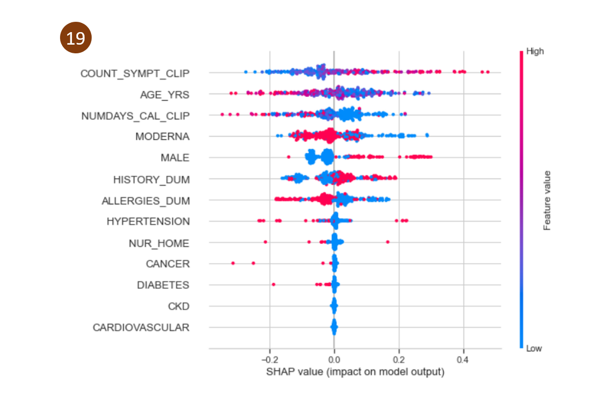
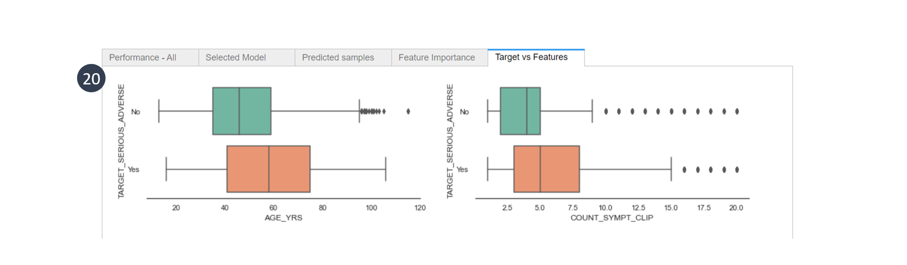
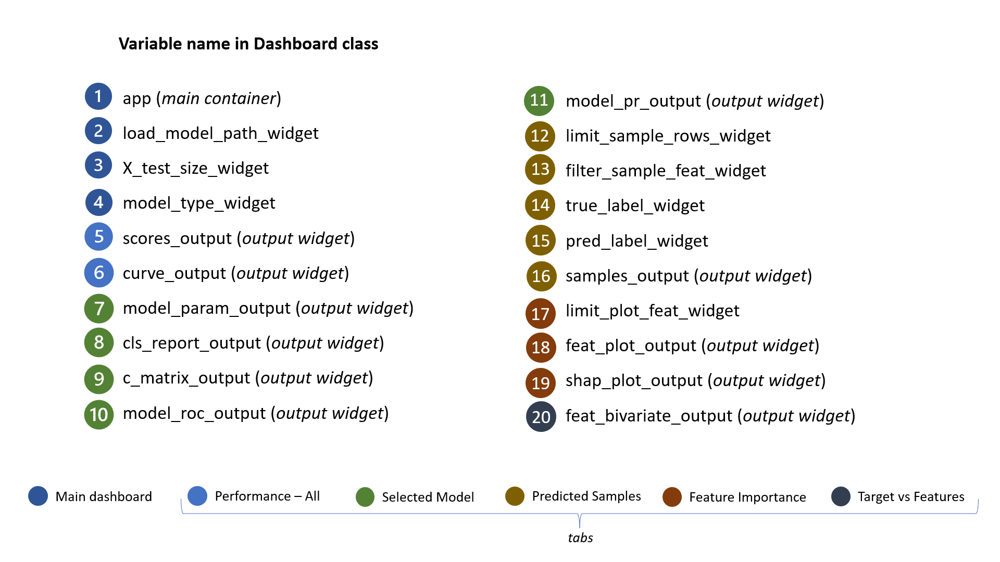
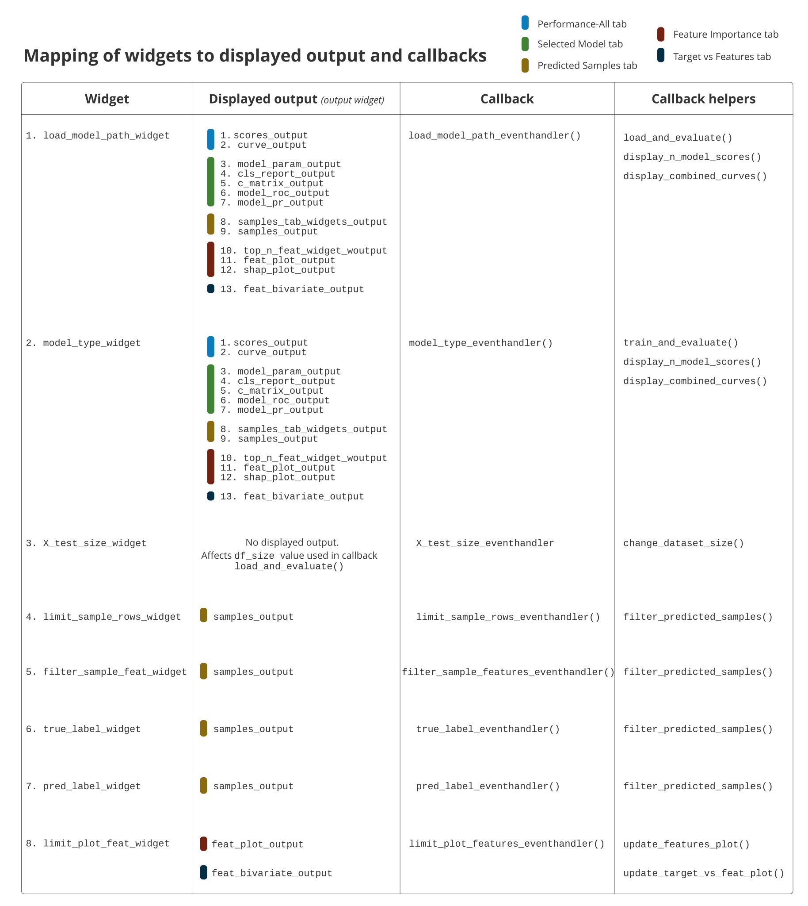
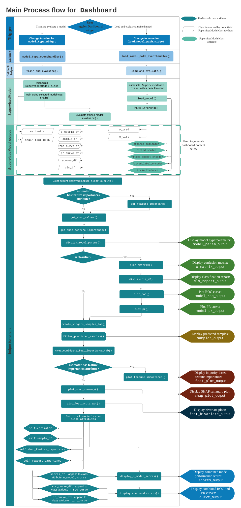
The Dashboard will only display content after the trigger of a main widget event within the dashboard.
There are two (2) main widget events in this dashboard:
The 2 main widget event process flows will be discussed separately below:
A python configuration file is required when training a model using the Dashboard. The configuration file would have to be imported as a module at the start of the notebook. See Configuration above on the required configuration variables.
The train and evaluate workflow is triggered when the user selects a model type from the model_type_widget dropdown box:
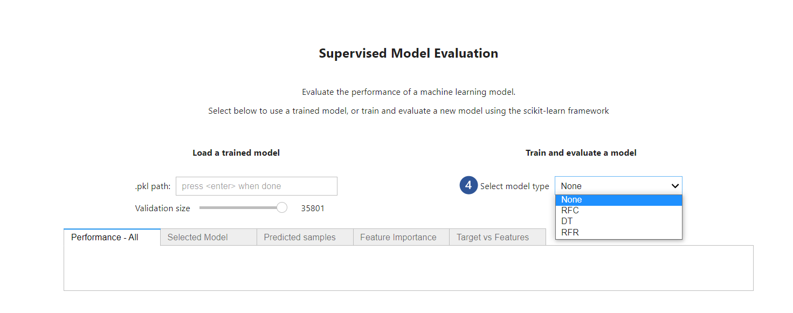
Model types available for selection:
| Estimator type | Option in dropdown box | Estimator |
|---|---|---|
| Classifier | 'DT' | DecisionTreeClassifier (scikit-learn) |
| Classifier | 'RFC' | RandomForestClassifier (scikit-learn) |
| Classifier | 'Auto-Classification' | AutoML (from FLAML package) |
| Regressor | 'RFR' | RandomForestRegressor (scikit-learn) |
| Regressor | 'Auto-Regression' | AutoML (from FLAML package) |
Each output to be displayed in the dashboard is captured by an Output widget. These output widgets capture and display stdout, stderr and rich output generated by IPython. The output to be displayed is directed to the respective output widgets using a context manager.
There are 11 output widgets for this main widget event.
The names of the output widgets are listed in Dashboard overview above. The output widgets are then placed in their respective containers, and organized into the following five (5) different dashboard tabs:
The 'Performance-All' tab displays the overall performance scores for the model. For classification problems, the combined Receiver Operating Characteristic (ROC) curve and Precision Recall (PR) curves will also be displayed.
If multiple models are sequentially trained, the underlying Data Frames from each of the model types will be appended to the class attributes n_model_scores, n_roc_curve, n_pr_curve. The concatenated Data Frames will then be used for the display of the combined model scores and combined ROC and PR curves in this tab.
An example display is shown below:
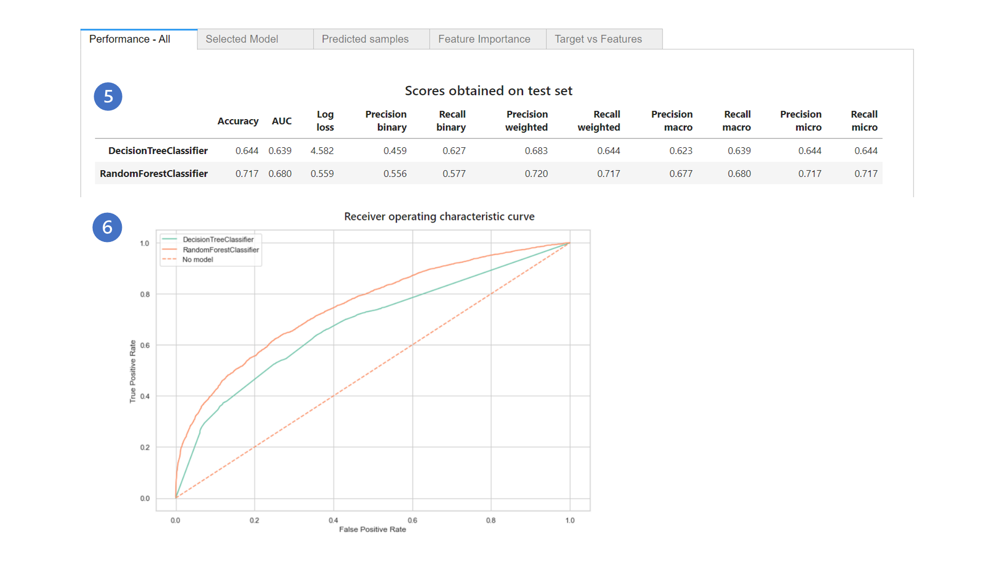
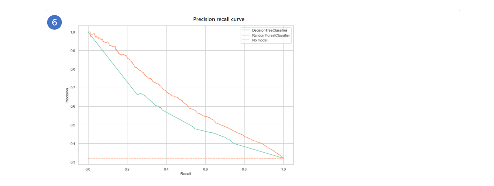
⚠️ For regressors, the
curve_outputwidget (labeled 6 above) for the combined Receiver Operating Curve and Precision recall curves will be a blank display.
The Selected Model tab displays the following:
Training set size
Test set size
Hyperparameters used for training the model
For classifiers, the following will also be displayed:
Classification report
Confusion matrix
Receiver Operating Characteristic (ROC) curve for that particular selected model.
The output for this curve is based on the roc_curve_df Data Frame generated from that particular model. This roc_curve_df will then be appended to the class attribute n_roc_curve at the end of the event (which will subsequently be used to display the combined curve in the Performance-All tab).
Precision Recall (PR) curve for that particular selected model.
pr_curve_df Data Frame generated from that particular model. This pr_curve_df will then be appended to the class attribute n_pr_curve at the end of the event (which will subsequently be used to display the combined curve in the Performance-All tab).
An example display is shown below:
⚠️ ROC and PR curves are only valid for binary classification problems at this stage. Only the predicted probabilites of the positive class are used in the calculation of the True Positive Rate and False Positive rate for the ROC curve, and the Precision and Recall values for the PR curve at different thresholds.
To reduce the risk of displaying erroneous output at this inital stage of development, the
evaluate()method in theSupervisedModelclass will returnNonefor the keysroc_curve_dfandpr_curve_dfin theresultsdictionary if there are more than 2 classes in the target variable.Caution should also be exercised when adding in non-probabilistic estimators such as SVM. See the future development section for further information.
The Predicted samples tab displays a random sample of the predicted labels and the 'ground truth'. For classification problems, this random sample is stratified using the proportions of the true labels in the combined test set. This combined test set consists of all features used in the test set,X_test, the true labels,y_test, and predicted labels,y_pred.
The user can toggle the respective widgets to filter the number of displayed rows, features to display, true label classes, as well as predicted label classes.
An example display is shown below:
⚠️ Please kindly note that this is only valid for numeric features at this current stage of development.
The Feature Importance tab displays the following:
This feature importance score is computed as the mean and standard deviation of accumulation of the impurity decrease within each tree (Mean Decrease in Impurity). The bar chart is sorted in descending order of feature importance scores.
The user can toggle the Top N features slider bar (limit_plot_feat_widget, labeled 17 below in the image) to limit the number of features to be displayed. This widget is connected to the number of bivariate plots to be displayed in the 'Target vs Features' tab. By default, all features will be displayed.
⚠️ This bar chart should be interpreted in the context of the following limitations:
- The statistics used for computing impurity-based feature importance scores are derived from the training dataset, and therefore do not necessarily inform the user on which features are the most important to make good predictions on the held-out dataset.
- These feature importance scores favor high cardinality features.
The SHAP values calculated in this tab are based on KernelSHAP, which is a kernel-based estimation approach for Shapley values. This method uses a special weighted linear regression to compute the importance of each feature. The computed importance values are Shapley values from game theory and coefficients from a local linear regression.
The SHAP Summary Plot combines feature importance with feature effects. This allows the user to get a sense of the relationship between the value of a feature and the impact on the prediction.
⚠️ SHAP values take a long time to compute. By default, a random sample of 100 from the training set will be used to compute the expected value, and a random sample of 100 from the test set will be explained. The user can also use all of the X_train to calculate expected values, and explain all of X_test.
The 'Target vs Features' tab displays bivariate plots of the target variable against each feature in the main Data Framedf.
The order of display is determined by the SHAP feature importance scores for each feature. Features with higher mean absolute SHAP importance scores are displayed first.
The number of bivariate plots to be displayed in this tab are determined by the Top N features slider bar (limit_plot_feat_widget, labeled 17 in Dashboard Overview). By default, all features will be plotted.
The data used to generate the plots are the features and target variables in the Data Frame df which is used to instantiate the Dashboard class.
An example display is shown below:
⚠️ Due to the HTML formatting within the container, when there are fewer features, the plots are automatically adjusted to fill up the container space. This may result in distorted plots which are stretched vertically.
If one-hot encoding is used to encode categorical features, there would be a mismatch in the number of features and names of the features to be displayed. This is due to the following:
- The order of display of each plot is determined by the SHAP feature importance scores
- These feature importance scores are extracted from the trained estimator. Each one-hot encoded feature would have separate importance scores that are difficult to re-combine together.
- However, the data used to generate the plots are from the Data Frame
dfused to instantiate theDashboardclass. This is because there would be limited utility in displaying bivariate plots of only the test set, or of the target vs one-hot encoded features; such plots may obscure the underlying relationships between the target and features.
Therefore, when one-hot encoding is performed for categorical features, there would be a mismatch between (1) the number of features used by the trained model, (2) name of features used by the trained model, and (3) the features present in the Data Frame
dfthat is used to instantiate theDashboardclass. This mismatch in the number and names of the features would results in errors in this tab display.
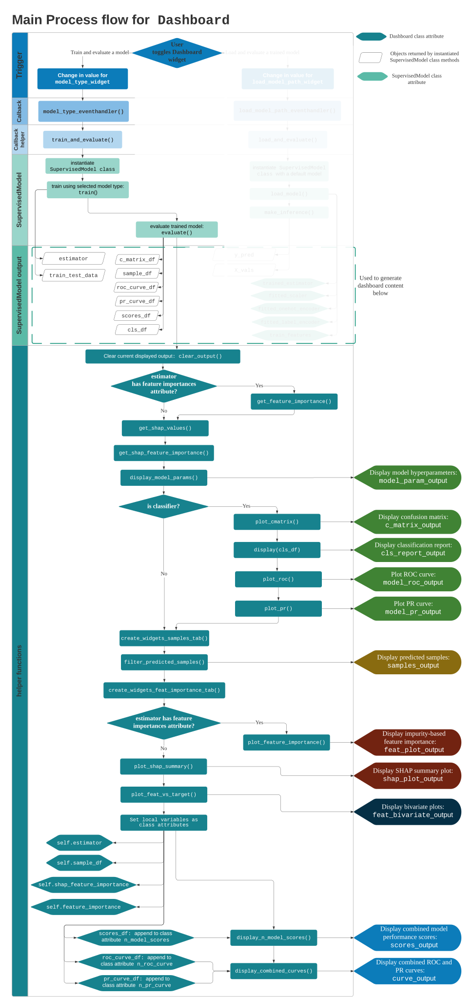
The main event for 'train and evaluate' a machine learning model is triggered by a change in the model_type_widget(see Event trigger), which then involves the callback function model_type_eventhandler(). This callback function first executes train_and_evaluate() to generate the required content to be displayed in the dashboard for the selected model.
Each output to be displayed in the dashboard is captured by their respective Output widgets. The names and location of these output widgets on the dashboard are listed in the Dashboard Overview.
These output widgets capture and display stdout, stderr and rich output generated by IPython. The output to be displayed is directed to the respective output widgets using a context manager.
The content to be displayed by each widget are based on their respective underlying Data Frames.
cls_report_output widget, the underlying Data Frame for the classification report, cls_df, has to be generated by the evaluate() method of the SupervisedModel class.
evaluate() method of SupervisedModel classTo generate the required Data Frames to be used for the display of output for the selected model, train_and_evaluate() uses the SupervisedModel class from supervised_model_class.py file. The train() method is first evoked to train the model, and then the evaluate() method is used to obtain six (6) Data Frames that will form the basis of the content for the dashboard:
sample_df: Data Frame of a sample of the predicted labels, true labels and features in the test set
c_matrix_df: Confusion Matrix Data Frame
roc_curve_df: Data Frame of false postive rates, true positive rates for different thresholds for a classifier
pr_curve_df: Data Frame of precision and recall values for different thresholds for a classifier, as well as the proportion of the positive class ('proportion_1') in the test set.
cls_df: Classification Report Data Frame
scores_df: Data Frame of model performance scores.
For classifiers, the following performance scores will be obtained:
Accuracy: Classification accuracy
AUC: Area Under the Receiver Operating Characteristic Curve (ROC AUC) from prediction scores
Log loss: Logistic loss or cross-entropy loss
Precision binary: Precision for the positive class
Recall binary: Recall for the positive class
Precision weighted: Average precision for each class, weighted by support (the number of true instances for each label)
Recall weighted: Average recall for each class, weighted by support (the number of true instances for each label)
Precision macro: The unweighted mean of precision for each class. Does not take label imbalance into account.
Recall macro: The unweighted mean of recall for each class. Does not take label imbalance into account.
Precision micro: Precision calculated by counting the total true positives, false negatives and false positives for each class.
Recall micro: Recall calculated by counting the total true positives, false negatives and false positives for each class
For regressors, the following scores will be obtained:
The Data Frames are then used by the respective helper functions from dashboard_helpers.py to generate the respective output/plots that are captured by the respective output widgets, as shown in the Overall flow.
dashboard_helpers.py
Within train_and_evaluate(), the following helper functions from dashboard_helpers.py are then called next to generate the underlying Data Frames required to display content in the Feature Importance tab:
get_feature_importance(): generates the DataFrame feature_importanceget_shap_values(): generates the matrix shap_values
This Data Frame is composed of the impurity-based feature importance scores for each feature used during model training.
These impurity-based scores are extracted from the (trained) estimator returned by the train() method from the SupervisedModel class.
This Data Frame is then used by plot_feature_importance() helper function to display the seaborn plot captured by the feat_plot_output widget (see label 18 in Dashboard Overview).
⚠️ This can only be used for tree-based estimators. Non-tree based estimators within the scikit-learn framework do not have the attribute
feature_importances_and will result in a blank display.
For classification problems, the shap_values would be a list of size n_classes (number of classes). Each element of this list is an array/matrix of size [n_samples, n_features], which corresponds to the SHAP (SHapley Additive exPlanations) values for the respective class. There is one row per data instance and one column per feature.
For regression models there would only be a single matrix of shap values of size [n_samples, n_features].
This is calculated using the shap KernelExplainer, which is a model-agnostic, kernel-based estimation approach for Shapley values. The KernelExplainer uses the (trained) estimator returned by the train() method from the SupervisedModel class.
By default, all of X_train will be used to estimate expected values to explain predictions.
X_train is a Data Frame created using the list of features used during model training (train_features), and the array of features used during training (X_train).
This array X_train is contained within the key "X_train" in the dictionary train_test_data that is returned by the train() method of the SupervisedModel class after a model is trained.
By default, all of X_test will be explained.
X_test is a Data Frame created using the list of features used during model training (train_features), and the array of test set features created after train test split (X_test).X_test is contained within the key "X_test" in the dictionary train_test_data that is returned by the train() method of the SupervisedModel class after a model is trained.
The array of SHAP values and X_test are then used by plot_shap_summary() to display the SHAP summary plot that is captured by the shap_plot_output widget (see label 19 in Dashboard Overview).
⚠️SHAP values take a long time to calculate. To reduce computing time, the user can select a sample of X_train to use in the calculation of expected values, and a sample of X_test to explain predictions for. This can be accessed using the
n_samplesoptional argument inget_shap_values()andplot_shap_summary().
If multiple models are sequentially trained, the Data Frames scores_df, roc_curve_df, pr_curve_df from each of the model types will be appended to the class attributes n_model_scores, n_roc_curve, n_pr_curve respectively.
The concatenated Data Frames will then be used for the display of the combined model performance scores. For classifiers, the combined ROC and PR curves will also be displayed in the Performance-All tab. The dashboard_helpers.py functions plot_roc() and plot_pr() are called to plot the respective ROC and PR curves in this tab.
The following is a summary of the Data Frame, associated class attribute, and output widget:
| Data Frame | Appended to class attribute: | Output widget | Label in Dashboard Overview |
|---|---|---|---|
scores_df | n_model_scores | scores_output | 5 |
roc_curve_df | n_roc_curve | curve_output | 6 |
pr_curve_df | n_pr_curve | curve_output | 6 |
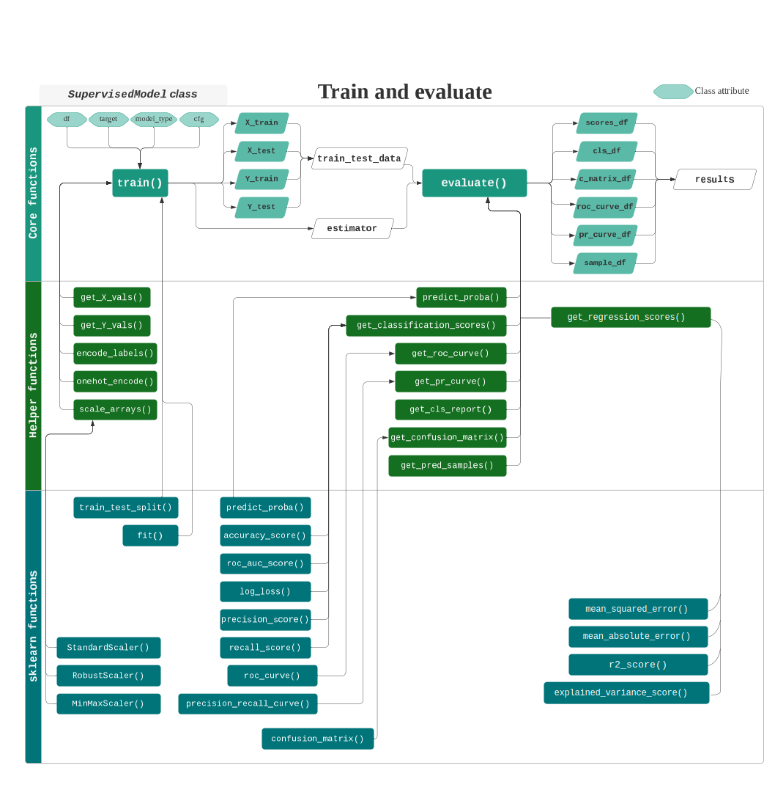
The above image shows the associated methods and helper functions of the SupervisedModel class that are involved to generate the required six (6) Data Frames that make up the content of the dashboard. Functions from the scikit-learn framework are used to generate the associated model scores.
The load and evaluate workflow is triggered when the user types in a .pkl file path into the load_model_path_widget text box, and hits [enter].
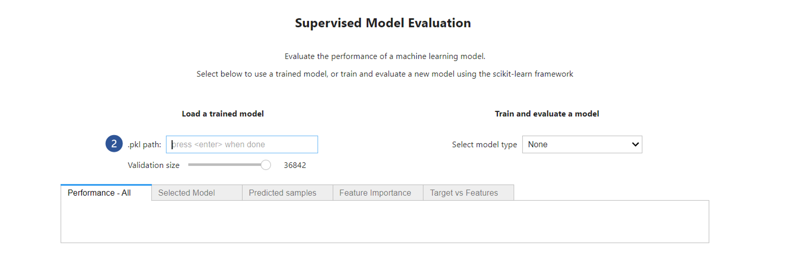
⚠️ The .pkl file should be a dictionary with the following keys:
'trained_estimator': trained estimator object from the scikit-learn framework.
'fitted_scaler': scaler fitted to the features in the training set, which will subsequently be used to transform the inference features.
'onehot_encoder': one-hot encoder fitted to the features in the training set, which will subsequently be used to transform inference features.
'label_encoder': label encoder fitted to the target in the training set, which will subsequently be used to:
- (1) transform the true labels of the target (
y_true) in the Data Frame used to instantiate theDashboardclass (df).y_truewill be used by theevaluate()method of theSupervisedModelclass to obtain model performance scores and other required Data Frames for the dashboard display.- (2) decode/
inverse_transformthe predicted labels during the evaluation phase.
'train_features': list of feature columns used when the model was trained.
- This is used to check if the features in the inference set are the same as those used for model training. An exception will be raised if there is a mismatch in the features used for model training (
train_features) and those used for inference (inference_features).
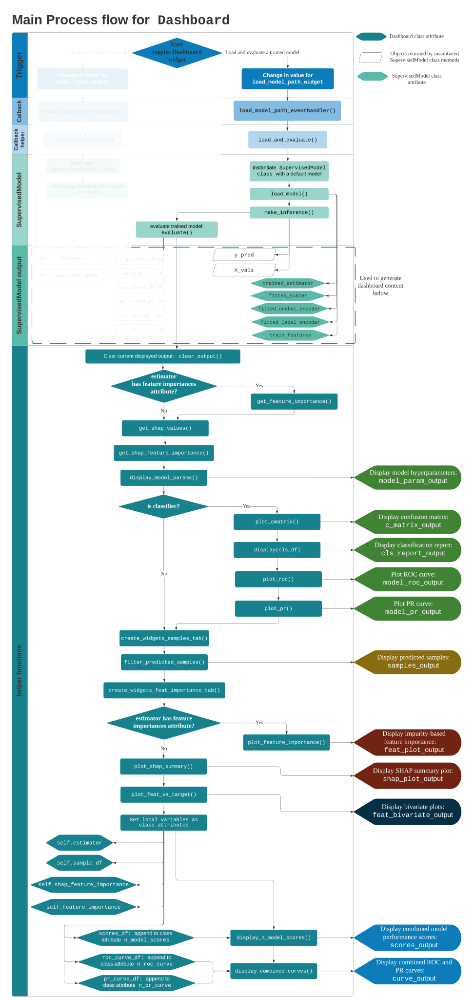
The main event for 'Load and evaluate a trained model' is triggered when the user types in a .pkl file path into the load_model_path_widget text box, and hits [enter] (see Event trigger). The callback function triggered by this widget is load_model_path_eventhandler(), which executes the helper function load_and_evaluate(). load_and_evaluate() will then generate the required content to be displayed in the dashboard for the selected model.
The displayed output are the same as the first main widget event, Train and evaluate a model. However, to obtain the content for the dashboard, load_and_evalute() will first perform the following:
instantiate the SupervisedModel class with a default model (DecisionTreeClassifier),
invoke the load_model() method of the SupervisedModel class to obtain the (trained) estimator and the other required scalers and encoders used during model training.
SupervisedModel class. Further details are listed below in the process flow for SupervisedModel class: load and evaluate.Obtain y_true from the Data Frame, df , that was used to instantiate the Dashboard class, and perform any required label encoding.
invoke the make_inference() method of the SupervisedModel class to obtain the predicted labels, y_pred and scaled/transformed features, X_vals,
X_vals, y_true, andy_pred will then be used as arguments for the evaluate() method to obtain the six (6) Data Frames that are required to generate the content for the dashboard.
The generated Data Frames are the same as those detailed in the 'train and evalute' main widget event, under the section Underlying Data Frames for content display. The only other difference between these 2 main widget events is that instead of using X_train and X_test to obtain the shap values, all of X_vals will be used to estimate the expected values, and all of X_vals will be explained (seen as input for get_shap_values() and plot_shap_summary() in the above Event 2 Overall Flow chart).
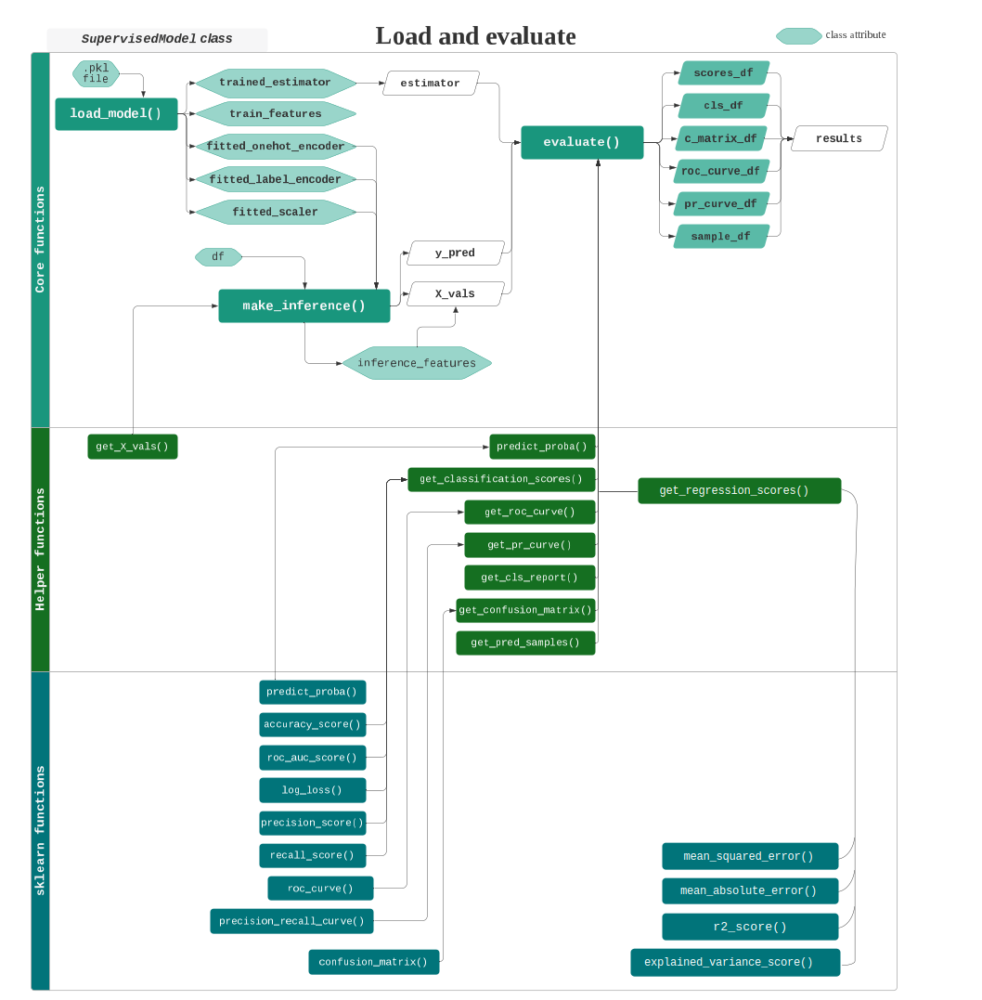
The above image shows the associated methods and helper functions of the SupervisedModel class that are involved to generate the required six (6) Data Frames that are required for the content of the dashboard. Functions from the scikit-learn framework are used to generate the associated model performance scores.
This Dashboard is an initial release version, which is only valid for:
There are many other various enhancements that the creator would have loved to experiment with. However, due to time constraints, it is unfortunate that they can only be discussed in this section. It is hoped that with these enhancements, this dashboard would eventually become a useful product.
For multi-class classification problems, the underlying SupervisedModel class would have to be edited in the following manner:
Add in class attributes for the SupervisedModel class to:
identify the positive and negative classes from the configuaration file cfg. This would allow the user to specify which labels belong to the positive or negative classes for multi-class classification problems.
identify the approach to use from the configuration file cfg - whether it is 'One vs One'('ovo') or 'One vs Rest'('ovr')
Add in multi-class classifiers for the set_estimator() method (eg. OnevsRestClassifier)
if multi-class classififers are not used, an additional method would be required to binarize labels in a one-vs-all fashion according to the positive or negative classess as defined in the configuration file cfg.
This additional method of binarizing the labels would minimise errors when obtaining the log_loss score in get_classification_scores().
Add in additional variables for theget_classification_scores() helper method to obtain the One-vs-rest or One-vs-rest AUC scores and type of averaging to use
Add in an additional for loop within get_roc_curve() helper method to obtain the roc curve values for each class, and add in an additional column for the class label within the roc_curve_df Data Frame.
Remove the if len(np.unique(y_test)) == 2: else statement (was initially was put in as this dashboard was planned only for binary classification problems) within the evaluate() method.
Errors in displayed output within the dashboard would likely be related to:
roc_curve_df or pr_curve_df being None within the results dictionary that is returned by the evaluate() method of the SupervisedModel class, plot_roc, plot_pr helper functions within dashboard_helpers.py which are currently only set up for binary classification problems. The hue parameter for the seaborn lineplots within these 2 helper functions ismodel - which refers to the estimator name (eg. RandomForestClassifier). For multi-class problems, this would have to be changed to the additional class label column of the roc_curve_df Data Frame (refer to point 4 above).
Multi-label classification problems are beyond the scope of this dashboard.
Additional classifiers have to be added to the set_estimator() method within the SupervisedModel class.
The options of the model_type_widget would also have to be edited to pass the name (in string format) of the new estimators to the SupervisedModel class during the main widget event 'Train and evaluate a model'.
Caution should also be exercised when adding in non-probabilistic estimators such as SVM. For SVM, in the binary case, probabilities are calibrated using Platt scaling and logistic regression on the SVM scores, fit by an additional cross-validation on the training data. The resulting probability estimates may be inconsistent with the scores as a result of this procedure.
Individual predictions within the Predicted Samples tab can also be explained with a shap force plot.
An additional widget can be created to select the data instance in the Predicted Samples tab to explain predictions for.
When clicked, this widget can pass the value of the row index of sample_df to the dashboard helper function plot_shap_force.
sample_df was created from X_test - hence, if we keep the Data Frame index column but just hide it in during the display, we can use this row index number as input for plot_shap_force to determine the data instance to explain predictions for.An additional output widget can be created to display this force plot in the same Feature Importance tab, just below the SHAP summary plot.
An example force plot is shown below:
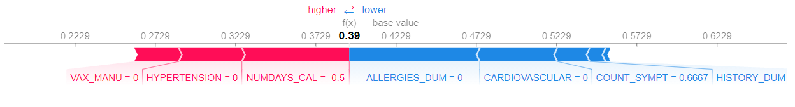
⚠️ Errors could arise as the shap_value matrices are different for classifiers and regressors. For classifiers, the shap_values from KernelExplainer would be a list of size n_classes (number of classes). Each element of this list is an array/matrix of size [n_samples, n_features], which corresponds to the SHAP values for the respective class. For regression models there would only be a single set of shap values of size [n_samples, n_features].
Due to time constraints, there is only one (1) regressor choice available: RandomForestRegressor.
Problems that may arise during the addtion of new estimators are similar to those issues discussed earlier in the section Adding new estimators.
With a continuous target variable, additional tweaks would have to be performed to get an appropriate display in the Predicted Samples tab:
true_label_widget and pred_label_widget (labeled 14 and 15 respectively in the Predicted Samples tab) is currently set using the helper function widget_option_unique_values defined in dashboard_helpers.py.widget_option_unique_values to display the binned target variable (for a continuous target variable) as widget options for the respective widgets would make the filter widgets more useful.
In SupervisedModel class, one-hot encoding is performed using the helper function onehot_encode. This, in turn, uses the OneHotEncoder class from the one_hot package within the category encoders library With this current library, it is difficult to encode and then consistently decode the categorical columns during the evaluation phase, so that the features match those in the Data Frame df used to instantiate the Dashboard class.
An alternative workaround would be a 2 step method to one-hot encode the categorical columns:
Fit a LabelEncoder to the columns to be one-hot encoded, and transform those columns
Then fit and transform those columns using OneHotEncoder